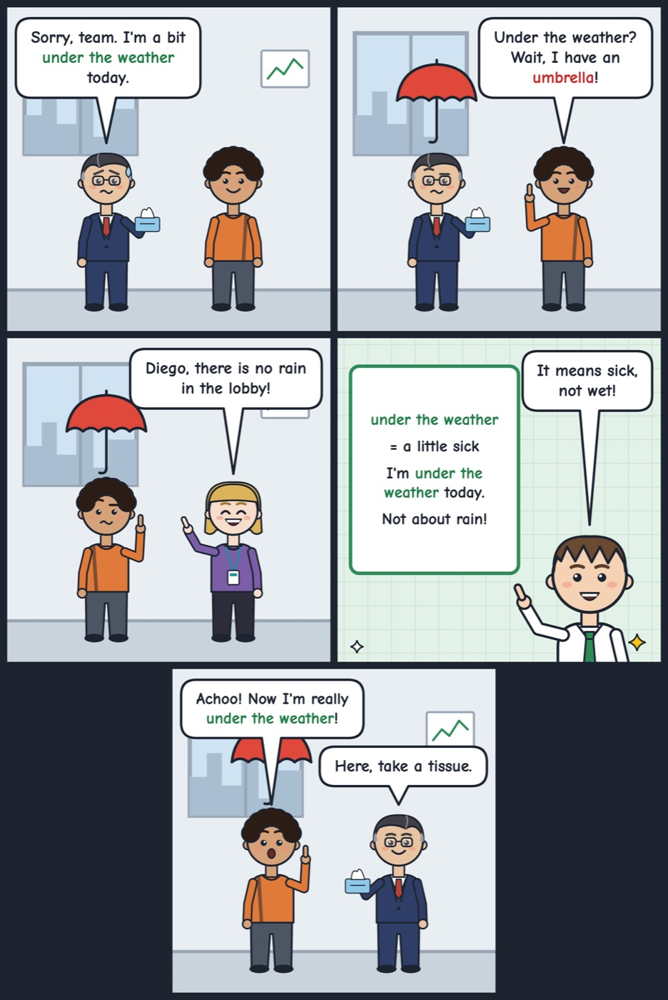

under the weather
Not feeling very well.
I'm feeling a bit under the weather today.
Tip: Use it with 'be' or 'feel' ('She's a bit under the weather'); it describes mild illness like a cold or tiredness, not a serious condition.
Hear it in conversation
AmiraHi Ken, are you coming to the study group tonight?
KenI don't think so. I've been under the weather since Monday.
AmiraOh no. Is it a cold?
KenProbably. I've got a sore throat and I'm exhausted.
AmiraStay home and rest. I'll send you my notes later.
KenThanks, Amira. That would really help.
Workbook
1. What does it mean?
In this conversation, what does 'under the weather' mean?
2. Fill the gap
Olena stayed home from work because she was feeling .
3. Choose the best reply
Diego: You don't look great, Kofi. Are you okay?
4. Your turn: speak
Tell me about a time you felt unwell but still had to go to work or school. What did you do?
Show an example answer
Last winter I was under the weather, but I had an important presentation at work. I took some medicine and drank a lot of water, and I got through it. Afterwards I went straight home and slept for ten hours.
Answer key: under the weather
- 1. C. Slightly ill and not feeling well
- 2. under the weather
- 3. A. Not really. I've been a bit under the weather all day.
- 4. Example: Last winter I was under the weather, but I had an important presentation at work. I took some medicine and drank a lot of water, and I got through it. Afterwards I went straight home and slept for ten hours.
See it in a comic
